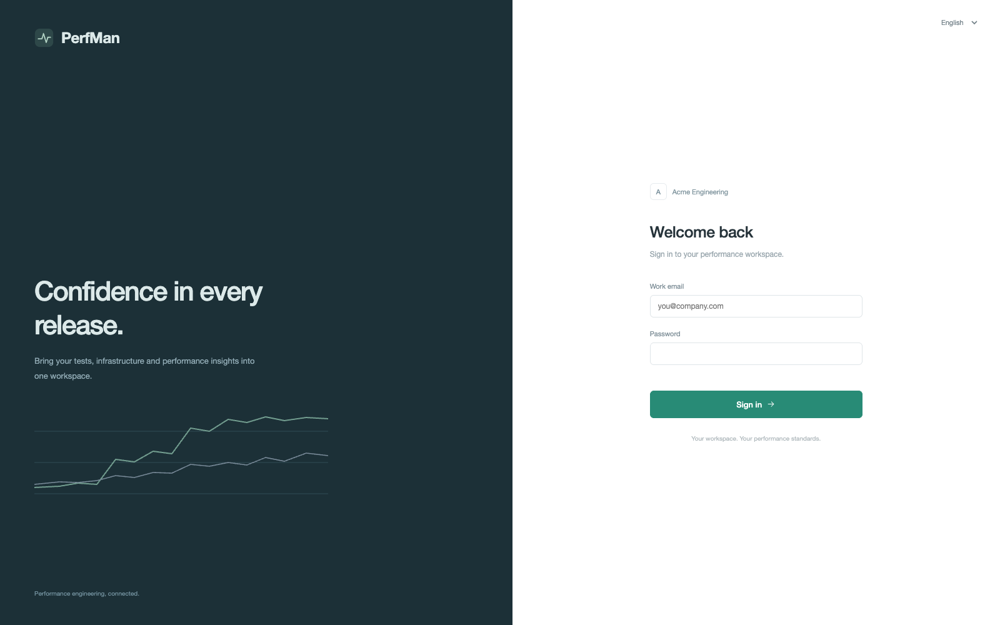
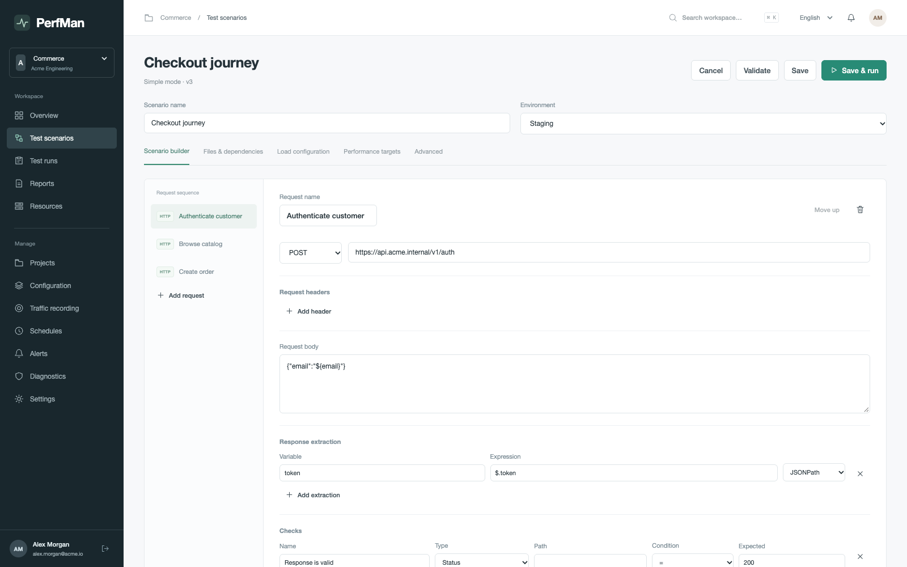
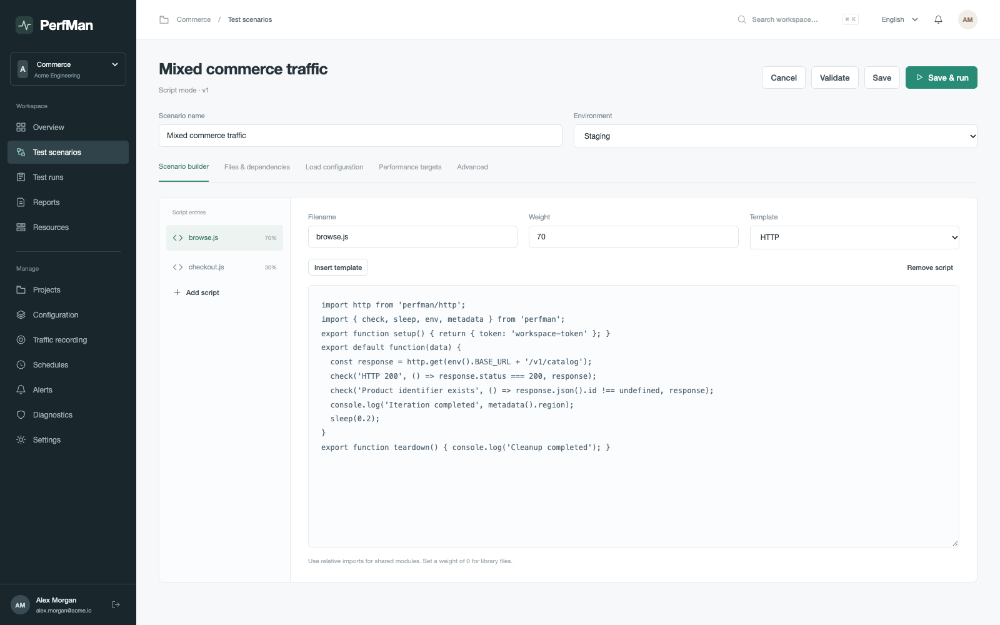
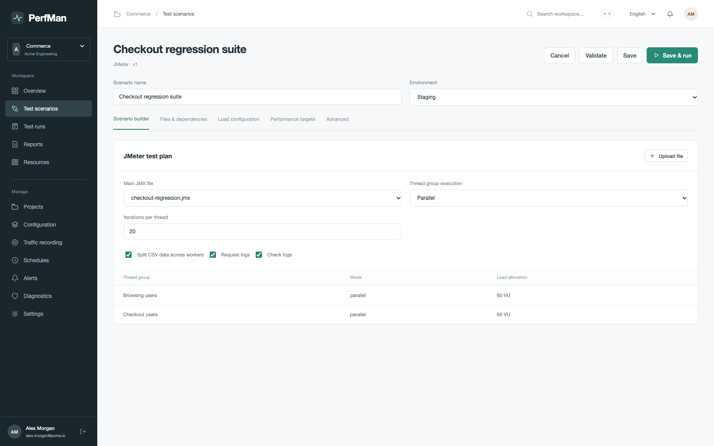

PerfMan / Product showcase
01
Scenario authoring
Sign in, build request journeys, compose JavaScript and configure JMX plans.
Workspace sign-in
Persistent sessions, project scope and role-based access.

Simple request journeys
Headers, chained extraction and response checks.

JavaScript composition
Weighted entries, modules and setup / teardown lifecycle.

JMeter plan configuration
JMX dependencies, thread groups, loops and logging.
